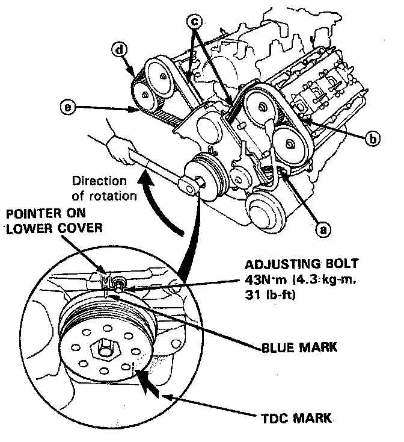

Timing Belt: Adjustments
Tension AdjustmentCAUTION:
- Always adjust timing belt tension with the engine cold.
- Do not rotate the crankshaft when adjusting bolt is loose (the timing belt will skid over the teeth of the rear intake camshaft pulley).
- Never adjust the belt tension on any other occasion than when the belt is removed.
NOTE:
- Tensioner is spring-loaded to apply proper tension to the belt automatically after making the following adjustment.
- Inspect the timing belt before adjusting the belt tension.
- Always rotate the crankshaft clockwise. Rotating it counterclockwise may result in improper adjustment of the belt tension or cause the belt to jump a tooth on the camshaft pulleys.
1. Install the timing belt with the No.1 piston at TDC.

2. Fix the crankshaft, remove the slack in the sequence of (a), (b), (c), (d) and (e) by turning each camshaft pulley.
3. Loosen the timing belt adjusting bolt 180° (the slack at (e) should be eliminated).
Then, tighten the timing belt adjusting bolt.
4. Verify the No.1 piston at TDC.
5. Rotate the crankshaft clockwise 9-teeth on camshaft pulley (The blue mark on crankshaft pulley should line up with the pointer on lower cover).
6. Loosen the timing belt adjusting bolt.
7. Retighten the adjusting bolt, torque to 43 N.m 14.3 kg.m, 31 lb.ft).